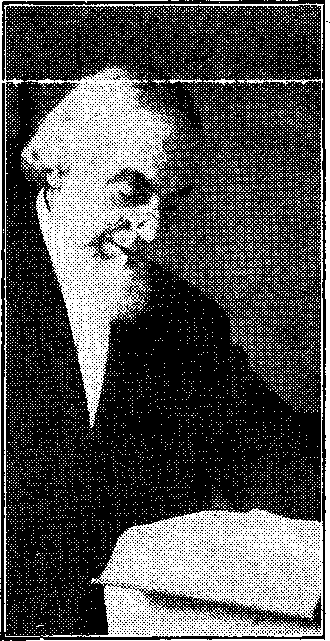

Vol. VI.
BROOKLYN, N. Y.
No. 1
A DESERVED REBUKE GIVEN BY _____i_________
“Brethren of the ministry, lend me your ears for a moment, while I present a new phase of this question.
“I do not wish to speak now of any rebuke we are giving or should give Russellism, though it deserves it. But I wish to call serious attention to the rebuke Russellism is giving us. From all our pulpits and at all our associations and other gatherings we hear Russellism denounced and the fact lamented that it is spreading the world over and winning many converts, and some of them from our own ranks.
“Now, why are so many being led astray by these teachings? Simply because Russell is teaching some truth, and very timely and precious truth, when he teaches a Millennium of peace and righteousness in the earth to follow the second coming of Christ.
“And herein consists the rebuke. Not any rebuke we are giving him, but a just rebuke Russell is giving us. Our preachers have not preached and informed the people on these subjects. Many of our people who have heard preaching all their lives have never heard a sermon on the second coming of Christ or the Millennium. Herein are we rebuked. We have not informed ourselves and our people on these subjects. If we had, they would be-safeguarded against the heresies the others associate with their teachings.
“Many a man reads this literature or hears them preach and discovers that the 'Scriptures really teach a second coming and a Millennium, and it is such precious and contorting truth that he feels drawn toward it, and, not being previously instructed in the true Scriptural teaching on the subject, he often swallows the whole thing, good, bad and all.
“Yes, I am sick of hearing fiery and eloquent speeches denouncing the heresy. Brethren, let us display some real manhood and courage, and just own up that the fault is at our door. Let’s study God’s Word on the subject and no longer excuse our ignorance by persuading ourselves that Daniel and the Revelations 'have no message for us that we can understand. It will astonish you how much you will find on these subjects, both in the Old and in the New Testaments. And if you come with open Bible to the door of wisdom and use your knuckles on the door and your knees on the floor, you will be happily rewarded.
“Yes, this precious teaching will make you a better man and will bring a great 'blessing to your people. And, as many signs seem to indicate the near approach of the fulfilment of the promise, it is more timely than ever for us to be properly informed along these lines. This is no doubt the reason that various groups of believers are stressing this subject.
“Once more, it is my profound conviction that God is especially and. purposely firing many hearts on this subject nowadays, and that He will ultimately overrule even Russellism for His own glory by blessing whatever truth he may teach and by making it the means of provoking many other people to search the Scriptures and get their eyes open. Very fraternally,
(Rev.) J. R. Wells, in Baptist Witness.
It is estimated that $65,000,000 are invested in the moving picture business; but of all this vast outlay none was so wisely expended nor calculated to accomplish so much good for both the head and heart as that which has gone toward the production of the Photo-Drama of Creation in all the cities of the world. It is everywhere acknowledged to be the greatest thing of its kind on earth.
V A postal request will secure a free X copy of this paper in which this in-24 teresting subject is treated in a X manner sure to satisfy. Address I. B. X S. A., 13 Hicks St., Brooklyn, N. Y.
“The Earth Abideth Forever”—Christ Will Not Return to Earth as a Man—Present Year Believed to Mark Great Change of Dispensation, but World May Not Discern Immediate Difference.
SERMON BY PASTOR RUSSELL, PRESIDENT OF THE INTERNATIONAL BIBLE STUDENTS ASSOCIATION
I AM prompted in the selection of my text by reading an extract from the sermon of a 'Canadian minister delivered recently. In it he declared that 1914 would witness the Second Coming of Christ, etc. His statement allowed the inference that he holds the view common to nearly all the creeds; namely, that the earth is to be burned up and the human, race blotted out; and that, incidentally, Christ will come a second time, to see that none of the Church are included in the destruction.
Mistakes of Dark Ages Being Corrected.
To my understanding, all such expectations are wholly unscriptural, untrue, misleading, and hindrances to a right understanding of the Bible. They belong to the Dark Ages, when public teachers seemed to lose all appreciation of poetic language, figurative language, mental imagery. They belong to the time when Christ’s references to Gehenna Fire, which burned outside the walls of Jerusalem, were understood to mean an eternity of torture for all except the saintly few. They belong to the time when Jesus’ words respecting the cutting off of the right hand and the plucking out of the right eye were misunderstood, and taken literally.
■St. Peter’s words are generally urged to 'be the foundation for the theory that the world will be destroyed 'by literal fire at the Second Coming of Christ, when the heavens shall be on fire, and the earth also and the things therein shall be 'burned up (2 Peter 3:10). A literal interpretation here overlooks the fact that St. Peter, speaking of the very same time, in Acts 3 :19-21, declares that ‘Times of Restitution and blessing—not times of world-burning—will follow the Second Coming of Jesus. It also overlooks the fact that. St. Peter and the other Apostles, as well as the Master, frequently used the word fire in a symbolic sense, to represent tribulation. Thus St. Peter, addressing the Church, says : “Think it not strange concerning the fiery trial that shall try you.”
St. Paul says that the fire of that Day shall try the -work of every man [the Church], of which sort it is. Those who. have built with .gold, silver, ' precious stones [the promises of God’s Word], shall be fireproof in that Day; while those who have built with the wood, hay and stubble of human tradition—'Higher Criticism, Human Evolution, etc.—will find their faith structure amenable to the fire; and they will suffer the loss of faith and have tribulations accordingly. Yet, the Apostle explains, such will themselves be saved, but these very fiery trials will destroy their misconceptions. They will be saved because, in spite of their errors, they built their faith upon Christ.—1 Corinthians 3
'The Apostle,.however, urged that all should build with gold, silver and precious stones—characteristics which would enable them to pass through the fire of that Day unscathed—“more than conquerors.” 'Similarly, Jesus referred to a testing of faith, by the figure of a flood, telling that those who built upon the sand would suffer loss; but that those who built upon the Rock would be safe. All these Scriptures, however, these references to fiery trials, etc., belong to the end of the Age—not the end of the w-orld.
“The Earth Abideth Forever.”
The Bible teaches that in God’s great Plan He has provided various epochs, or ages, each for the accomplishment of its own special work; for instance, the Jewish Age with its work, and the Gospel Age with its work, to be followed by the Alillennial Age and its still different work. The Bible declares that “the earth abideth forever” (Ecclesiastes 1:4) ; that “God created it not in vain; He formed it to be inhabited.” (Isaiah 45:18.) The earth 'has never yet been inhabited. There are immense tracts of country still unoccupied. The Divine Plan for the earth has not yet reached consummation. It will require the thousand years of Messiah’s glorious Kingdom Power to bring the world out of present sin and death conditions, and into the glorious condi-
PASTOR C. T. RUSSELL.
tions of Millennial blessing and Restitution, of which the Scriptures so frequently speak, and which St. Peter declares God has spoken by the mouth of all His holy Prophets.
So, then, the basis for thinking of the end of the world, now or ever, is purely a misunderstanding, due largely to the fact that our English translation uses the word world where it would more properly have used the word Age, Epoch, or order of things. In a word, the present order of things, of which the 'Scriptures declare Satan is the prince, or ruler, is not to be perpetual; it is to pass away. A new order of things, under the control of Messiah, the Prince of Light, is to take the place of the present reign of the Prince of Darkness. A reign of righteousness and life is to succeed the present reign of sin and death, according to St. Paul.—Romans 5 :17, 21.
Christ’s Second Coming.
The Bible everywhere represents that Ghrist left a Heavenly glory when He came to earth nearly nineteen centuries ago. “The Logos was made flesh and dwelt among us.” The Bible explains that the necessity for this humiliation, this leaving the glory and taking a bondman’s form, lay in the fact that God had pronounced a death sentence upon man, which mankind were paying and from which they could not be released unless someone would become their redeemer and meet the penalty for them—a, death penalty, not an eternal-torment penalty, of which the Scriptures know nothing.
The Bible nowhere tells that Jesus took the human nature to keep it forever, and to return with it to Heaven, where it would be completely out of order and out of place. The Bible teaches, on the contrary. that “flesh and blood cannot inherit the Kingdom of God” (1 Corinthians 15: 50) : and that Jesus was made flesh merely “that He, by the grace of God, should taste death for every man” (Hebrews 2:9).; and that alter doing this work He would “ascend up where He was before.” (John 6:62.) St. Paul assures us that this, the Divine Program, has been carried out. After telling of our Lord’s obedience to the Father’s will in humbling Himself to death, even the death of the cross, he adds, “God hath highly exalted Him”—“far above angels, principalities and powers.”—Philippian® 12 :5-ll; Ephesians 1:20-23.
The . Master declared plainly, “Yet a little while, and the world shall see Me no more”; but He promised that He should be seen by His followers. St. John declares, “We shall be like Him; for we shall see Him as He IS.” (1 John 3:2.) We read: “Every eye shall see Him”; but this, to 'be in harmony with the other Scriptures, must refer to the byes of understanding. The Bible declares that eyes of human understanding are blinded now by error and sin, but that shortly all the blind eyes shall be opened. Then all will see Messiah and His Kingdom with the eye of faith, as the Church now see Jesus, the crown of life, and the things which the natural eye hath not seen.
Parousia —- Presence; Epiphania—
Manifestation.
'Our English word coming is used to translate several very different Greek words. One of these is Parousia, which means presence, and is used in referring to the first stage of the Lord’s Second Advent. He will be invisibly present. For a time none but the saintly few whose eyes of understanding are anointed through the' Word and the Spirit will realize His Parousia, His presence, while all things earthly will continue as they have been—buying, selling, building, marrying, etc. Then, later on, will come the Epiphania; that is to say, the revelation, or manifestation, of the present One. This will not be a manifestation in the flesh, but in a great ‘Time of Trouble, symbolically represented as fire, as when we read, “He shall be revealed in flaming fire, taking vengeance.”—2 Thess. 1:7-10.
To my understanding, the Bible teaches that Jesus has -been present in the world since 1874. In other words, His Second Advent then began. The wonderful progress in the world since then Bible students thus explain; the wonderful blessing upon them and their study of the Bible they interpret in 'harmony with this. 'They understand the Bible to teach that this Parousia will continue for a thousand years; but that the Epiphania, or manifestation to the world, w’ill be due in forty years from the time the Presence began. For this reason they are looking
(Continued on 2d page, 2d column.)
Mnttiljlg PUBLISHED AT
13-17 HICKS ST.. BROOKLYN, N. Y. C. W. HEK, Editor.
Monthly—12 cts. a year. Single copies, 1c.
An Independent, Unsectarian Religions Newspaper, Specially Devoted to the For warding of the Laymen’s Home Missionary Movement foi' the Glory of God. and Good of Humanity.
IS MONEY WASTED ON MISSIONS?
American missionary work in China has gone to extravagant and unnecessary extremes, and thousands of dollars are wasted annually in the name of missions, according to Dr. John J. Mullowney, assistant chief medical inspector in the Department of Health of Pennsylvania. Dr. Mullowney is a graduate of the University of. Pennsylvania 'Medical School and for a year attended the Harvard Medical School. After graduation he went to China as a medical missionary. For four years he taught in the Union Medical College of North China and also was in charge of the Hopkins Memorial Hospital, at Pekin.
Quit Because of Opposition.
“After serious thought,” Dr. Mullowney says, “I could .not feel that I could conscientiously be a part in bringing into China a system of which I could not approve, that is, bishops, paid ministry, baptism, sectarianism and forms and ceremonies which I have learned to believe are absolutely foreign and unnecessary to the real, rimple teaching of Christ. I could not feel that it was wise or practical to endeavor to teach such subjects as medicine and the sciences in the Chinese language, and I was convinced of the folly of this more because the Chinese themselves, through the National Board of Education, had decided that these subjects should be taught in the Government colleges in the English language; and yet those - in control of the school where I taught were trying to teach medicine in the Chinese language.
“While 1 do believe in taking the real Message of Christ to China, I cannot feel that it is,.. religious duty or a practical undertaking for us to take thousands of dollars annually from the common people of these United States to help build in China a lot of institutions of higher education which may be useful from the standpoint of learning, but which are not an essential of the Message of Christ. I cannot think that it is our religious duty to beg the hard-earned money of our people in America for the purpose of building up institutions of education which are to compete with each other and with Chinese Government institutions—because it is both unnecessary and foolish. It is unnecessary because the Chinese nation is perfectly able to educate its own people and is doing it in its own way, which is the best way for them. It is foolish for us to think that we know how to educate the Chinese' better than the Chinese themselves, and it is foolish to try to do for them what we have not done for ourselves.
Sects War Upon Each Other.
“In short, 1 have come to feel that we are pretending to' do what we have not done for ourselves and we are. pretending to be what we are not, which is expressed in one word—hypocrisy.
“Personally, I feel that the missionary efforts of the American people in China have gone to extravagant and unnecessary extremes, and that if we were only content to do the thing that Christ demands of us, and that alone, it would cost us far less and would be far more effectual. If we were not so egotistical as to think that the Chinese could not take the Message to their own people, but that we ourselves must go there, bag’ and baggage, it would show a far larger faith'in our religion and would call for an infinitesimal part of what is now spent on ‘missions.’ And better than all else, it would not have given rise to the importation into China of a host of sects and factions, which are now the concrete evidence of the desire of each religious group, or each church in America, to place or advertise its own particular institutions in China. This may be good business, but it is not what Christ bade His followers to do.
“I am not a pessimist, and I firmly believe in the ultimate spread of the Message of our Great Teacher to the four corners of our earth, but I sincerely believe that we have much to learn and to undo if we are to h ip to that great end efficiently and rationally. I believe .that every exponent of Christianity, every man and woman who goes there, should be self-supporting: and I believe that the Chinese people would be glad to support every man and institution that is necessary for the spread of true, real and simple Christianity in China.”—■ Philadelphia Record.
{Continued from 1st page, 1th column.') very interestedly to see what the present year may bring forth.
And do we not see everywhere signs of unrest, a time of trouble brewing? It looks as though this year would mark the beginning of the ‘‘flaming fire” of judgments upon the world which will mark the closing of this Age and the inauguration of the New Dispensation of Messiah's Kingdom, when “justice shall be laid to the line and righteousness to the plummet,” and when the ignorance,, superstition and darkness which so long have hindered us will begin to be broken. The transition may be painful, yet it will be blessed, marking the overthrow of Satan's empire and reign of sin and death and the inauguration of Messiah’s Kingdom and its reign of righteousness and life eternal.
“Eating, Drinking, Planting and Building.”
Our Lord, in describing His Second Presence, clearly indicated that it would be unnoticed by the world until the cataclysm of trouble should come. Thus He likened the earlier days of His presence to that period before the Flood, when the world, uncon cious of the impending catastrophe, continued to build, eat and drink as usual, and knew not. So, says the (Master, it will be in the end of this Age. Eating, drinking, building, planting . and marrying will proceed as usual; and the world will not know that they are in the PRESENCE of the Son of Man. The great Day of Trouble, noted throughout the Scriptures as “the Time of Trouble such as never was since there was a nation,” will come upon them suddenly—• St. Paul says, like the pangs of a woman in child-birth. A New Dispensation and new order of things is about to be born, and this great trouble is merely incidental to that birth.
St. Paul, in referring to the matter, says: “Yourselves know perfectly, brethren, that the Day of tne Lord cometh as a thief in the night. For when they [the world] shall say. Peace and safety, then sudden destruction cometh upon them, as travail upon a woman with child ; and they shall not escape. But ye, brethren, are not in darkness, that that Day should overtake you as a thief. Ye are all children of the light, children of the Day.”—1 Thessalonians 5:1-6.
Change a Cause for Rejoicing.
If this great change from the dominion of Satan to. the rule of Christ shall begin to manifest itself this very year, 1914, it will be a cause for rejoicing to all. Although no sufferings are joyous, but rather grievous, nevertheless, when we know that our interests are in the hands of a gracious Savior, who died for us and who is intent upon doing all that can be done for the recovery of our race from sin and death, we may well be glad in realizing that the Plan which Messiah is about to carry out for the blessing and uplifting of mankind from sin and death conditions is part of the original Divine Plan of the Father. And we have all the .more joy, confidence and assurance that all things will work together for good to those that love God.
“The bud may have a bitter taste, But sweet will be the flower.”
The trouble will be an awful one, but we believe not of great length. The Bible everywhere tells of the glorious results that will follow, when the shackles of darkness, sin and error shall be broken, and when all the spiritual powers surrounding mankind will be good and helpful, as in contrast with those of the ■wicked spirits now operating through mediums, by clairvoyant and clairaudient powers, to ensnare, to deceive, to bewilder mankind.
The fact that our Lord appeared in seven different flesh-forms on various occasions after His resurrection does not contradict other plain statements. Rather, we see that such appearances resembled the appearances of angels in the flesh, to communicate some good message ■ from God to men. Had Jesus not materialized and appeared to His disciples, what proof would they or we ever have had respecting His resurrection? And would not the fact that He saw them for a few moments and then vanished tend to prove to them that. He was no longer a flesh being, but a spirit being, who had merely appeared to them for a special purpose? St. Paul declares that he saw the Lord last, and not as a man, but as a spirit being, whose brightness was above that of the sun; and it injured his eyesight; ■for our Lord was not veiled in the flesh, as when He appeared to the disciples during the forty days.
. The Christ who is to come a second time, then, is not the Jesus of the flesh, but the glorified Jesus, who in nature and.glory, is far above the angels—of the Divine nature.
"“This Same Jesus—Shall Come
Again.”
When Jesus ascended, two angels appeared to the disciples, saying, “This same Jesus whom ye have seen go into Heaven shall so come asrain in like manner as ye have seen Him go.” In the past many of us have misunderstood this statement—not scrutinizing it carefully enough. Assuredly it will be the same Jesus that will come again—the same One who died for us, the same One wno left the glory for us before He was born the Babe of Bethlehem. In all His changes He remains the same personality, as He declared: "I am He that is, and was, and is to come.” The angels did not say, however, He will come again in the flesh, or materialized, as you have seen Him go away. Their message related to the MzkNNER of His going and the MANNER of His coming. What was there special about the manner of His going away that would correspond to the manner of His coming again? Many things! He went away quietly, secretly, unknown to the world, unknown to any except His disciples. In like manner has been His Parousia—silently, quietly, unknown to the world, not known to any except His disciples. Surely, if we are. right in saying that His Parousia began in 1874, the manner would correspond with the manner of His going. He did not come with glorious hosts, blaring trumpets, etc., but as a “thief in the
BATTERING DOWN THE WALLS OF HELL
“O Sheol [hell}, I will be thy destruction.”—(Hosea 13:14.) "O Hades [hell}, where is thy - , victory?”—1. Corinthians 15:55.
OUR text teaches that Jesus will destroy the hell of the Bible, the tomb —the state of death. He will do it by delivering all mankind from death by the resurrection. Thus He will ultimately gain His great victory over sin and death and deliver numanity from their power. No one but Jesus can do this. Hence we must .wait for the appointed time—the establishment of the Messianic Kingdom. Meantime, it is ours to batter down the hell of torment which for centuries has troubled God’s saints, and turned the hearts of the masses from their Creator.
■ The masses of Christian ministers are educated. Preachers in general know well that the Bible does not teach a hell of torture—that the words Sheol, Hades, Gehenna and Tartarus do not. signify a place of torture—where all except the saintly will everlastingly suffer. These ministers do not come forth into the open to combat the error, presumably because they do not realize that this terrible blasphemy against the Divine character lies at the bottom of nearly all the godlessness and the growing unbelief in the Divine Word now prevalent. To us it is evident that reverence for God and faith in the Bible can never be restored until this great Moloch of false teaching shall be demolished. This explains our zeal for the exposing of the error of the past, and
for the revealment of truth on the subject of future punishment. All 'the precious promises of the Bible, and all its just penalties, are negatived and made of no effect by this colossal error of the past, whenever it is recognized, conceded.
We will not in this issue attempt explanations of some of the three or four parables, which by mistranslations, misunderstandings and interpolations have been made to support the. God-dishonoring doctrine that everlasting torture is the wages of sin, in contradiction of the Bible statement, “The wages of sin is death.” We content ourselves with reminding our readers that we have already published articles on the parable of the “Rich Man and Lazarus,” the parable of the “Sheep and the Goats,” and the Lord’s statement, “Where their worm, dieth not and their fire is not quenched”: and again in Revelation, about the Devil being cast with the beast and false prophet into torment. We shall be glad to furnish our readers with free copies of these upon application. These four figurative statements are the whole basis, so far as the Bible is concerned, of the doctrine of eternal torment.
The God of AH Grace.
The God of the Bible is such a one as every human heart needs and craves. He is a God of sympathy and love, respecting Whom it is declared ('Psalm 102:1.9, 20), that He looked down from His Holy Habitation and beheld, and heard the groaning of the prisoners. “Then His own Arm brought salvation.” (Isaiah 63:5.) The groaning of the prisoners was not in some far-away fiery furnace, but right here on earth—in every home. St. Paul declares: ' “The whole creation groaneth and travaileth in pain together.” night.” If we have the correct date and chronology, Gentile Times will end this year—1914.
What of it? We do not surely know. Our expectation is that the active rule of Messiah will begin about the time of the ending of the lease of power to the Gentiles. Our expectation, true or false, is that there will be wonderful manifestations of Divine judgments against all unrighteousness, and that this will mean the breaking up of many institutions of the present time, if not all. Some Scriptures seem to indicate that this will mean world-wide anarchy, not all beginning at the same moment, nor ending at the same time, but beginning and gradually spreading the world around. The further intimation is that this trouble will eventually prove a blessing to humanity, melting their hearts in the Day of Trouble, teaching them more of sympathy for one another, breaking the power of superstition, wealth, ignorance, etc.—preparing them for the glorious Reign of Messiah’s Kingdom.
He is quite right. Our race groans because we are slaves of Sin, and Sin is paying us the prescribed penalty, namely, death.
We are a dying race, mentally, morally and physically. We are more and more disappointing to ourselves and to others, and we hasten toward the tomb, slaves and prisoners—going down into the great prison-house of Death. That prison-house of Death, the tomb, is the Bible hell. All the aches and pains which come to us as we approach and enter the prison are incidental parts of the penalty. But
“There’s a wideness in God’s Mercy, Like the wideness of the sea.”
He has purposed a blessing upon every member of the race, all of wnom have suffered the loss of Eden happiness and of life itself through the disobedience of the first man, Father Adam. The Second Adam is to completely undo the work of the first, and is to give every member of the race fullest opportunity for reconciliation and return to the Father’s House.
The work of Jesus at the first Advent was only a preparatory one. His death was necessary as the corresponding price for the sin of the First Adam. Only by paying that penalty could He ever have the right to destroy the great prison-house —the tomb, Hades—and to deliver the prisoners by resurrection from the' dead. His work was satisfactory. He has been received up into glory “where He was before,” only with added dignity at the Father’s right hand. There He waits, the. Psalmist tolls us, for the hour to strike ■when He shall take his great power and reign.—Psalm 2 :8-10.
The first feature of His campaign will be the binding of Satan. Then He will cause the Sun of Righteousness to shine forth, with healing in its beams. The light of the knowledge of God shall fill the whole earth. Every knee will bow and every tongue confess.. All will have the fullest opportunity for return to God, and only the willingly disobedient and rebellious against light will die the Second Death, go into “everlasting destruction.”
“He Upon the Tnrone Said:”
. Beautifully does the Book of Revelation picture the coming glories of Messiah’s Kingdom and the blessings to mankind. Mark that it is the enthroned Messiah who declares, “Behold I make all things new,” and who tells that, as Jehovah’s Messenger and Representative, He will wipe away all tears from off all faces and give beauty for ashes, and the ■oil of joy for the spirit of sadness.—Revelation 21:4; Isaiah 61:1-3.
The God of Love and Grace, the God who sympathizes, with His creatures and who promises ultimately to wipe away all their tears, is the only God who appeals to the human heart and head. Our misconceptions in the past served to drive the world further and further away from. God, and even the saintly found it difficult to worshin Him in spirit and in truth —so dense was the cloud of ignorance and superstition which enshrouded us. Hark to Cardinal Newman’s words,
“Lead kindly Light,
Amidst the encircling gloom.”
God is sending out His light and truth. The encircling gloom is breaking. The errors and superstitions which hindered us from seeing the beaut)’ of God’s Word are 'being scattered. The light from one page and statement is shining upon another. The entire Word of God is heard as never before.. God is speaking. His people are hearing. Bible students in all parts of the earth are awakening to the unsectarian study of the Lord’s Word.—2 Timothy 2:15.
True, Satan is still active. He is not yet bound. The Prince of Darkness hates the light, battles against it, and enlists on his side as many as possible. Alas, that he s able to gain a few as honest and as blind as was Saul of Tarsus, nineteen centuries ago'. Tnese now breathe out threatenings, as did Saul. But we have confidence that all sincere ones, like St. Paul, will soon see a great light and hear the great voice of the Master, and be fully delivered from the evil spirit of persecution, which, in our day, uses slander and “shoots out arrows, even bitter words,” to destroy the Message and the messengers of the Prince of Light, now shortly to take His power to reign for a thousand years, subjecting all things to the Divine standards.
There is no doubt that the Church dur- wXfinn Tloro than
ing the Dark Ages came under the influ- Psica^ Powers to perfection. M re t an ence of the “doctrines of demons” re- ww TW T A yw"1! T T"
WHAT 15 OUR DU 1Y
ferred to by St. Paul. He declared that the demons of the Bible are identical with the fallen angels of Genesis 6. They seek to hide their identity, representing them
selves as holy angels or as dead human beings speaking to the living through mediums, as in Bible times — through witches, wizards, necromancers, astrologers, soothsayers, etc.
These, under Satan’s domination, have for centuries sought to substantiate Satan’s lie, and to deceive mankind into believing that the dead are not dead; into believing that Satan told the truth, saying, “Ye shall not surely die,” and that God told the untruth when He said, “Thou shalt surely die.” To turn the hearts of men away from the God of Love and Mercy, they have traduced His character and cultivated human fears.
The experiences among the heathen .in India are very interesting. The more intelligent quickly learn the difference between the Message of God’s love and the message they had heard from the missionaries. They declare tnat they cannot accept the teachings of the missionaries, to the effect that all of their forefathers have gone to a hell of torture, simply because they never heard of Jesus.. They declare that they could not believe in such a God, even though they respected the intelligence of the missionaries on other subjects.
They say, “Our gods do not allow us to torture even brutes or insects, and hence would not themselves delight in torture. How can we receive the Christian’s God with sentiments less noble than our own?” We have all made mistakes more or less in the past. God’s Word is now opening up to us more and more. We are learning wherein we misunderstood Him and His gracious purposes. Begin a proper study of the Bible. You will find it soul-satisfying beyond all else.
In India scores of Bible students classes are springing up; and native teachers in India, China, Japan and Korea are hearing of the God of Love and Mercy and of the better and clearer understanding of the Bible with rejoicing hearts. The Gospel of the Kingdom—that Messiah is soon to become the great King, to establish righteousness, to overthrow sin and to uplift humanity—appeals to the simple minds of the Orient, especially to those attracted to Christianity, but unable to enter ,.eartily into its service because of the darkness, mysticism and . unreasonableness attaching to its exposition.
The prayer of our Methodist friends, “Send out Thy Light and Truth, O Lord,” is surely being answered, even though some godly Methodists are slow to perceive the answer. The Message of the Love of God which passeth all understanding is the Message which was forceful with our own hearts as Christians, and is the only Message which has power; 'hence our Master’s prayer, “Sanctify them through Thy Truth; Thy Word is Truth.”—John 17 :17.
Fear may ce the beginning of wisdom, but Love is si rely its goal. Perfect love casteth out all fear, and brings us near to the great Fountain of Grace and Truth, Mercy and Love. In His Divine presence and fellowship we find a transforming work progressing in our hearts.—'and more and more such become copies of God’s dear Son and prepared for a share with Him in the glories of His Kingdom.
Ignorance and Fear Oppose.
Only ignorance and fear can oppose the Message of God’s Grace and prefer the doctrines of demons. Only the narrow-minded can pray, “God bless me and my wife, my son John and his wife, us four and no more.” All of our breadth of heart and head must concede that a God wise and powerful enough to be man’s Creator must also be just and loving; for injustice is unwise and lovelessness is devilish. God declares that His work is perfect, and that He made man a moral image of Himself. Our fallen condition is a part of the penalty of sin, as the tomb is the companion of it.
No complaint could have been made by our race if God had left us thus to perish like brute beasts. But the Bible declares that He is rich in mercy, and unwilling that any should perish, but desirous that all might be recovered to everlasting ?fe. Again, we read that God so loved the world that He gave His Only Begotten Son that whosoever believeth on Him might not perish, but, on the contrary, instead of perishing like the brute beast,
might attain through Christ to everlast- this? it will mean for those who have died “ without the knowledge of the Truth an
ing life.—John 3:16. ---------- — —---------
The world has not yet had the prom- awakening from the tomb, that they also ised blessing of God; for the Divine Plan may be brought to this knowledge of God is that Jesus must first select from and to a privilege of sharing in the great
amongst the world a company of His own disposition of loyalty to the Divine will. Not until those shall be fully selected and glorified will the great Messiah, Head and members, be completed. Then Bridegroom and Bride, enthroned in glory, the work of blessing will begin..
And that work will be the overthrow of sin, and thus the overthrow of the penalty of sin—death. It will mean the re-. covery of mankind from bondage to sin and death. It will mean the uplifting of
TOWARD THE TRUTH
ITS COST—ITS VALUE—ITS PROFIT
BOTH the light of nature and that of Glory, and before Him shall be gathered revelation clearly demonstrate the all nations, and He shall Judge them dur
the fact that an intelligent, wise, almighty and righteous God is the Creator of all things, and that He is the supreme and rightful Lord of all; that all things animate and inanimate are subject to His control; and that the Bible is the revelation of His character and plans so far as He is pleased to' disclose them to men. 'From it we have learned that though evil now predominates among some of His creatures, it exists for only a limited time and to a limited extent, and by His permission, for wise ends which He has in view. We have also learned that though darkness now covers the earth, and gross
darkness the people, yet God’s light .in due time dispel all the darkness, the whole earth will be filled with glory.
will and His
We have seen that His great Plan is one that has required Ages for its accomplishment thus far, and that yet another Age will be required to complete it; and that during all the Dark Ages of the past, when God seemed to have almost forgot- , ten His creatures, His Plan for their future blessing has been silently but grandly working out, though during all those Ages the Mysteries of His Plan have been wisely hidden from men. We have also seen that the Day or Age which is now about to dawn upon the world is to be the Day of the World’s Judgment, or trial, and that all previous preparation has been for the purpose of giving mankind in general as favorable an opportunity as possible, when, as -individuals, they will be placed on trial for eternal life. The long period of six thousand years has greatly multiplied the race,’ and their buffetings and sufferings under the dominion of evil have given them an ’ experience which will be greatly to their advantage when they are brought to judgment. And though the race as a whole has been permitted thus to suffer for six thousand years, yet as individuals they have run their course in a few brief years.
Kingdom of God Soon to Be Established on Earth.
We have seen that while the race was undergoing this necessary discipline, in due time God sent His Son to redeem them; and that “while the mass of mankind did not recognize the Redeemer in His humiliation and would not believe that the Lord’s Anointed would thus come to their rescue, yet from among those whose1 hearts were loyal to. God and believed His promises, God has been, during the Ages past, selecting two companies to receive the honors of His Kingdom—the honors of sharing in the execution of the Divine Plan.
These two select companies, we have seen, are to constitute the two phases of the Kingdom of God. And from the Prophets we learn that this Kingdom is soon to be established in the earth; that under its wise and just administration all the families of the earth will be blessed with a most favorable opportunity to prove themselves worthy of everlasting life; that as the result of their redemption by the precious blood of Christ, a grand “Highway of Holiness” will be cast up; and the Ransomed of the Lord (all mankind—Heb. 2:9) may walk in it; that it will be a public thoroughfare made comparatively easy for all who earnestly desire to become pure, 'holy ; and that all the stumbling-stones will be gathered out, and all the snares, allurements and pitfalls removed, and blessed will all those be who go up thereon to perfection and ever-luting life.
It is manifest that this judgment, or < rulership, cannot begin until Christ, whom < Jehovah hath appointed to be the Judge * or Ruler vf the world, has come again— < not again in humiliation, but in power < and great glory; not again to die for the < world, but to judge [rule] the world in < righteousness. A trial can in no case 4 proceed until the judge is on the bench * and the court in session at the appointed < time, though before -that time there may < be a great preparatory work. Then shall < the King sit upon the Throne of His ’
Redeemer’s work and merit. No wonder the angels sang, “Glory to God in the Highest” at the birth of the Redeemer I No wonder they declared, “We bring you good tidings of great joy, which shall be unto all people” I
God’s glory has not yet appeared to man. False doctrines, ignorance, superstition still becloud the vision of humanity. St. Paul’s words still apply: “The god of this world hath blinded the minds of all them that believe not, lest the glorious light of God’s goodness should shine into their hearts.”—2 Corinthians 4:4.
ing that Age by their works, opening to them the books of the Scriptures and filling the earth with the knowledge of the Lord. And by their conduct under all that favor and assistance, He shall decide who of them are worthy of life everlasting in the Ages of Glory and Joy to follow.—Matt. 25:31-46; Rev. 20:li-13.
“The Knowledge of the Lord to Fill the Whole Earth as the Waters
Cover the Sea.”
Thus we see that the Second Advent of Messiah, to set up His Kingdom in the earth, is an event in which all classes of men may have hope, an event which, when fully understood, will bring joy and gladness to all hearts. It is the day when the Lord’s “little flock” of consecrated saints has the greatest cause for rejoicing. It is the glad day when the espoused virgin Church with joy becomes the Bride, the Lamb’s Wife; when she comes up out of the wilderness, leaning upon the arm of her Beloved, and enters into His glorious inheritance. It is the day when the true Church, glorified with her Head, will be endued with Divine authority and power, and will begin the great work for the world, the result of which will be the complete Restitution of all things. And it will be a glad day for the world when the great Adversary is bound, when the fetters that have held the race for six thousand years are broken, and when the knowledge of the Lord fills the whole earth as the waters cover the sea.
Let us remember that the strength sufficient which God has promised us, and by use of which we can be “overcomers,” is provided in His Word. It is a strength derived from a knowledge of JHis character and plans, and of the conditions upon which we may share in them. Thus Peter expresses it, saying, “Grace and peace be multiplied unto you through the knowledge of God, and of Jesus Christ our Lord, according as His Divine power hath given unto us all things that pertain unto life and godliness, through the knowledge of Him who hath called us to glory and virtue; . whereby are given unto us exceeding great and precious promises^ that by these ye might be partakers of the divine nature.”—2 Pet. 1:2-4.
But to obtain this knowledge and this strength, which God thus proposes to supply to each runner for the heavenly prize, will surely test the sincerity of your consecration vows. If you have consecrated all your time, all your talents, to the Lord, the question is, How much of it are you giving? Are you still willing, according to your covenant of consecration, to give up all? to give up your own plans and methods, and the theories of yourselves and others, to accept of God’s Plan and way and time of doing His great work? Are you willing to do this at the cost of earthly friendships and social ties? And are you willing to give up time from other things for the investigation of these glorious themes so heart-cheering to the truly consecrated, with the certain knowledge that it will cost you this self-denial? If all is not consecrated, or if you only half meant it when you gave all to the Lord, then you will begrudge the time and effort needful to search His Word as for hidden treasure, to obtain thus the strength needful for all the trials of faith incident to the present (the dawn of the Millennium) above other times.
“STUDIES IN THE SCRIPTURES,”
Over 8,000,000 Copies in Circulation—19 Languages—
Handsome Embossed Cloth.
i Divine Plan of the Ages”...
। Time Is at Hand”..........
■ Kingdom Come” ...........
Battle of Armageddon”....
Vol. I. “The ’ “ II. “The “ III. “Thy • “ IV. “The
V. “Atonement Between God and Man”
VI. “The New Creation”...................
The World Knows Not the Lord’s Followers, Even as It Knew Him
Not.
But think not that the giving will end with the giving of the needful time and energy to this study; it will not. The sincerity of your sacrifice of self will be tested in full, and will prove you either worthy or unworthy of membership in that “little flock,” the overcoming Church, which will receive the honors of the Kingdom. If you give diligence to the Word of God, and receive its truths into a good, honest, consecrated heart, it will beget in you such a love for God and His Plan, and such a desire to tell the good tidings, to preach the Gospel, that it will become the all-absorbing theme of life thereafter; and this will not only separate you from the world and from many nominal Christians, in spirit, but it will lead to separation from such entirely. They will think you peculiar and separate you from their company, and you will be despised and counted a fool for Christ’s sake; because they know us not, even as they knew not the Lord.—2 Cor. 4:8-10; Luke 6:22; I John 3:1; I Cor. 3:18.
Are you willing to follow on to know the Lord through evil- and through good report? Are you willing to forsake all, to follow as He may lead you by His Word? to ignore the wishes of friends, as well as your own desires? It is hoped that many of the consecrated who read The Bible Students’ Monthly may by it be so quickened to fresh zeal and fervency of spirit, through a clearer apprehension of the Divine Plan, that they will be able to say, “By the grace of God, I will follow on to know and to serve the Lord, whatever may be the sacrifice involved.” Like the noble Bereans (Acts 17:11), let such studiously set tnemselves to prove what 'has been presented in this and other issues. Prove it, pot by the conflicting traditions and creeds of men, but by the only correct and Divinely authorized standard—God’s own Word? It is to facilitate such investigation that we cite so many Scriptures.
It. will be useless to attempt to harmonize the Truth herein set forth, with many of the ideas previously held and supposed to be Scriptural, yet not proved so. It will be observed that the Divine Plan is complete and harmonious with itself in every part, and that it is in perfect harmonv with the character which the Scriptures ascribe to its great Author. It is a marvelous display of Wisdom, Justice, Love and Power. It carries with it its own evidence of superhuman design, being 'beyond the power of human invention, and almost beyond the power of human comprehension.
Doubtless questions will arise on various points inquiring for solution according to the truths herein presented. Careful, thoughtful Bible study will settle many of these at once; and to all we can confidently say, No question which you can raise need go without a sufficient answer, fully in harmony with the views herein presented. Our space, of course, is limited, but we would recommend to our readers Pastor Russell’s Studies in the Scriptures (announced in this issue), which elaborate the various branches of this one Divine Plan, disclosing at every step that matchless harmony of which the Truth alone can boast. And be it known that no other system of theology even claims, or has ever attempted, to harmonize in itself every statement of the Bible; yet nothing short of this can we claim for these views. This harmony, not only with the Bible, but with the Divine character and with sanctified common sense, must have arrested the attention of the conscientious reader already, and filled him with awe, as well as with hope and confidence. It is marvelous indeed, yet just what we should expect of the truth, and of God’s infinitely wise and beneficent Plan.
And while the Bible is thus opening up from this standpoint, and disclosing wondrous things (Psa. 119:18), the light of the present day upon the various creeds and traditions of men is affecting them in an opposite manner. They are being recognized even by their worshipers as imperfect and deformed, and hence they are being measurably ignored; and though still subscribed to, they are seldom elaborated, for very shame. And the shame attaching to these human creeds and traditions is spreading to the Bible, which is supposed to uphold these deformities of thought as of Divine origin. Hence the freedom with which the various advanced thinkers, so-callejd, are beginning to deny various parts of the Bible not congenial to their views. Whoever comes in contact with Truth, realizing its character, has thereby a responsibility with reference to it. It must be either received and. acted upon, or rejected and despised. To ignore it does not release from responsibility. Let your light shine!
..384 PP .•384 “ ••384 “ ..688 “ .640 “ • -750 "
By PASTOR RUSSELL \
NOW ZZff POST <
ONLY iPA’OU PAID I
for the entire set of six books, < together with one year’s sub- < scription to Pastor Russell’s < semi-monthly journal The < Watch Tower. Order to-day. < INTERNATIONAL BIBLE STUDENTS <
ASSOCIATION <
Brooklyn. N. Y., or London, England *
TRUE BASIS FOR HUMAN EQUALITY “DESIRE OF ALL NATIONS SHALL COME”
An answer to George Bernard Shaw’s masterful address before the National Liberal Club of London—Pastor Russell calls attention to the only weak point in the argument, and sets forth the Bible teaching that human equality can be brought about only by Messiah’s Kingdom.
SOME time ago the famous National Liberal Club of London called upon. Mr. George Bernard Shaw to deliver an address before the members of that club upon the subject of Human Equality, and therein to set forth his remedy for the alleviation of the social inequality and injustice which prevail the world over. Mr. Shaw accepted the invitation, and in a masterful way discussed social conditions. By both example and explanation he gave in detail his conviction that equality of income is the only kind of equality possible to humanity.
Mr. Shaw’s address, together with . replies from several members of the National Liberal Club, appeared in the Metropolitan of last December. The article has provoked much comment. The Editor of the Metropolitan gave opportunity for any one who desired to controvert Mr. Shaw’s argument to do so.
Friends of Pastor Russell saw the invitation and urged the Pastor to reply. Finally he consented. Following is his letter to the Editor:
Editor Metropolitan,
New York City.
Dear Sir:—Friends have called attention to Mr. George Bernard Shaw’s article in your December issue, and to your invitation for replies thereto. Responding to their earnest requests, I submit the following ;
The Basis for Human Equality.
Our esteem for Mr. Shaw’s cogency of reasoning and forcefulness of expression increased with every sentence of his masterful article, as w.e read it. We hold that his argument is unanswerable, except upon one point. We endorse it all except that one point, even though no two> thinkers might express their thoughts in precisely the same terms. Unfortunately for Mr. Shaw’s argument, his one point of weakness is the center, or fulcrum, upon which his masterly argument rests. In other "words, while he has demolished practically all other arguments, theories and fads, he has not established his own.
Mr. Shaw sets ''before us a human equality based upon an equality of income. Yet a picture of his ideal is disconcerting and unsatisfactory. For this reason, every reader of Mr. Shaw’s article, while conceding the strength of his argument, must have felt a keen disappointment in the end. His own and other men’s ideals, ground to powder, Mr. Shaw’s proposal was wholly unsatisfying. We are prone to believe that Mr. Shaw shared in this disappointment with his readers I For surely reasonable reflection will convince us that the mere giving to every human being a bag of gold of equal size would not make the individuals equal—'but merely ■the money, which one would hoard,, another lavish and waste, and a fe " wisely use. A world thus on the financial basis of equality would be as unequal as at the present time as respects mental and moral equality—the soul. Indeed, they would be more unequal than now; for each, able to gratify his whims, would accentuate his peculiarities; .whereas now the treadmill of necessity moderates these whims and teaches valuable lessons.
Having brushed aside Mr. Shaw’s theory of human equality on a 'financial basis, and he himself having already swept away all other theories, our way is cleared for the presentation of the true theory of human equality. We confidently affirm that the only basis of human equality, as yet an ideal only, is the perfection of the human soul. By this soulperfection we mean that balance and poise of mind which is represented by the Golden Rule, and which the Bible calls the image and likeness of the Creator. With all men brought to this grand standard of mental and moral perfection of meekness, gentleness, patience, ’brotherly-kindness, justice and love, we should have human equality. Be it remembered that such perfection of mind' would include perfection of body, since the two are so intimately related as to be really parts of the same. Provide this condition in the world, and we shall have peace, love, joy, and as the Bible says, there will be no more sighing, no more crying, no more dying—no more curse in any sense of the word.
We take it that all of our readers will heartily acquiesce in this presentation— that they will all admit that any other equality would be as unsatisfactory as our present conditions—or nearly so. But do we hear an objection? Does somebody say: Such a perfection is idealistic and impracticable? We reply that this is not the question before us. 'The question is: What is human equality? With equal force we might claim that Mr. Shaw’s theory of an equality based on income is an unattainable theory—that by no
We are now entering the Seventh Day, or Epoch. We have been amazed that the aurora of its dawn has been so much brighter than that of its predecessors. Within its first fifty years the world has been illumined with rich blessings of intelligence, which evidently come, not because of humanity’s increased mental powers, but because the hand of Divine providence is lifting the veil and scattering the mists hitherto impenetrable. The Bible explains that according to the Divine Plan, arranged before man’s creation, the Seventh Day or Thousand-Year Epoch is to be totally different from the preceding six. Through appointed agencies “God will wipe away all tears from off all faces”—the curse or blight of sin, DEATH, will he removed. Instead, the sunshine of Divine favor will bring to humanity life, joy, peace, not through Evolution, but through Restitution.—■ 4-cts 3 :19-21.
Original Cause of Human Inequality
According to the Bible, humanity deteriorated at an alarming rate for four thousand years. St. Paul explains to us that this degradation, which is still more or less manifest all over the earth, came because of human wilfulness and because God did not interfere to hinder the demoralizing course, except in a few instances—Sodom, Nineveh, etc. We read, “When they knew God, they glorified Him not as God, neither were thankful; but became vain in their imaginations, and their foolish heart was darkened; professing themselves to be wise, they became fools, . . . Wherefore God also gave them up to uncleanness through the lusts of their own hearts . . . and even as they did not like to retain God in their knowledge, God gave them over to a reprobate mind, . . . being filled with all unrighteousness, fornication, wickedness, covetousness, maliciousness; full of envy, murder, quarreling, deceit, malignity.”
Two ways were open to the Creator in dealing with His rebellious creatures : (1) He could coerce them or destroy them. (2) He could permit them'to take their course and learn the lesson of the “exceeding sinfulness of sin”; and that “whatsoever a man soweth, that shall he also reap.” Then He would reveal to His creatures His own character of Justice, Wisdom, Love and Power, and demonstrate that He could provide and offer to them recovery from the plight into which disobedience had plunged them—recovery from sin, weakness, sorrow, pain, death—■ or the alternative of obedience to these blessings, would bring annihilation, “everlasting destruction” (2 Thessalonians 1:9)—to perish “like natural brute beasts.” (2 Peter 2 :12.) The latter is the plan which God adopted, according to the B'ble. Who can dispute its reasonableness, its justice, its love, its Godlikeness?
process of reasoning can we imagine that humanity, constituted as it is with diversities of tastes and appetites, could ever bring itself to the place where all incomes would be exactly alike. And if the equal income could be attained daily, one man would have spent his before noon and be seeking to rob the other who had been more economical. The same is true of all the other theories which Mr. Shaw so cleverly dashed in pieces.
Evolution Theory a Disappointment.
Our answer to the question is complete in the foregoing; but, as we still have space at our disposal, let us briefly outline how the Bible teaches that the ideal of human equality above set forth will yet become an accomplished fact—in approximately a thousand years from now.
Few evolutionists would be reckless enough to express the hope that the ideal human perfection above suggested could be attained by the human family short of millions of years—if ever. All evolutionists know that in one thousand years more, say, A.D. 3000, at the present rate of human increase, doubling every century, Earth would be overcrowded with a population two thousand times as many as at present, which would give them no time adequate to the attainment of human perfection, even if their theories were correct. Furthermore, evolutionists are becoming discouraged with their own theories, in view of the fact that mental, moral and physical decay seem to be on the increase, despite the heroic efforts made by noble souls to stem the tide. Despite the efforts of our learned physicians and surgeons the race is growing weaker and diseases multiply proportionately.
Education does not estop immorality, vice, criminality—our prisons and reformatories are overflowing. Humanity’s brain power is deteriorating. Asylums are multiplying and yet are crowded. In our noble Empire State more than thirty-two thousand thus mentally unequal, are confined in asylums—one out of every one hundred of the adult population of the State. It surely is time to bring forward some more satisfactory solution of the matter than the Evolution theory can offer, of attaining human perfection—• God-likeness.
Human Equality Jhe Divine Purpose.
It has well been su'd that “Man’s ex- ' 'tremity is God’s opportunity.” The Bible, ignored or scoffed at in the colleges, and misunderstood and misrepresented in the house of its friends, is now in God’s due time coming to the front. To the astonishment of Bible students the Holy Spirit is illuminating its parables and dark sayings in an astounding manner. Instead of its being the foolish old Book that many of us once supposed, it is now radiating a light all its own—harmonious, reasonable, grandly beautiful—the very thing that honest, intelligent souls have yearned for and sought for ages. Astonishing wonder I The Bible tells that from the very first God has planned a world-wide Human Equality. More than this, the Bible indicates just when this condition of things will come to pass. Furthermore, it tells precisely the instrumentalities and methods. God will use in bringing it to pass I
Only concisely can we portray this great, marvelous story of Holy Writ in our allotted space. Briefly: God foreknew the disobedience of the first man, who was created in his Maker’s moral likeness—perfect, yet untrained and inexperienced. The Creator permitted him to take his course, to bring upon himself sorrow, pain, crying and dying—mental, moral and physical imperfection; not eternal torment in some other world, as taught by our creeds and generally misunderstood by all. The Divine purpose, according to the Bible, is that humanity’s troubles and difficulties shall eventually prove educational to all. The Divine Program as therein set forth is divided into seven great Epochs or Days, corresponding to the human week. For six of these great Thousand-Year Days man has labored in toil, and sweat of face to extricate himself from the entanglements of his fallen condition—sin, sickness, sorrow, pain, tears, dying.
But as we have seen, all of these efforts have been futile. The sages of the past, who sought the world around for the waters of life and elixirs of health, have been followed by our great schools of medicine and thousands of able practitioners—to no effect. In spite of all our efforts, we are a dying race. As St. Paul declared: The world has been living under a reign of “Sin and Death,” for six of these great Days, each a thousand years long.
Retracing our steps we see in the light of the Bible that while the world in general took its own course, God revealed Himself nearly twenty-five hundred years after the fall, to Father Abraham—'because of His loyalty of heart. However, the great Seventh Day appointed ’for Earth’s blessing was yet far distant. And so the Almighty, instead of changing the operation of His Plan, merely injected into the loyal heart and head of Abraham an illuminating ray—a Divine promise which pointed down to the great time of •blessing. God informed Abraham that the prevalent blight, or curse, of death would ultimately give place to a general blessing which would affect every member of the human family. He assured him that this blessing would be bestowed through members of the sin-cursed race, and that Abraham’s descendants would be prominently identified with the work of blessing. Abraham merely got heart-inspirations. These "were handed down to Isaac, to Jacob, to all Israel: and these promises are the basis of all Christian hopes. As expressed in Jesus’ prayer, “Thy Kingdom come; Thy will be done on earth, even as it is done in Heaven.” Here we see exemplified the power of the mind and its uplifting influence." Not that all the Jews ’were lifted out of sin and idolatry to grandeur of character—only a few were thus exercised. The others received merely a secondary influence from the promises, which they imperfectly understood and but slightly believed. It has been the same during this Christian era. The wonderful words of life and hope through the Kingdom preached by Jesus and His Apostles had a quickening effect, a transforming influence, a sanc
tifying power, upon the comparatively few who heartily believed and loyally obeyed throughout this Age. The secondary influence of the teachings of Christ are manifest in the higher civilization that has since come into the world—much of it merely a form of godliness without the real power—nevertheless, this reflex influence of this last Message from Jehovah has done much to lift the whole world out of its previously helpless stupor.
Divine Method of Restoring Equality
The Bible explains that the dying conditions which have prevailed in the world for six thousand years are to give place to resurrection influences in the great •Seventh Day already dawning. In that day Messiah will reign—exercise Divine power in the interest of humanity. Satan and all malevolent influences opposed to God, righteousness, truth, will be bound or restrained; and good, helpful, blessed influences, knowledge, truths, will, like a rising sun of righteousness, flood the whole earth with blessings and helpful opportunities of return to Divine favor and everlasting life.
God’s promise to Anraham, “the hope set before us in the Gospel” (Hebrews 6:13-19), is so comprehensive as to include every member of our race in the blessings promised. “In thy Seed shall all the families of the earth be blessed.” This, as Jesus and the Apostles pointed out, guarantees a resurrection of the dead —both just and unjust, “every man in his own order,” company, or class. The first, or chief, resurrection Jesus informs us will include none but the saintly class who faithfully follow His leading in their hearts, and, so far as.possible, in their words and deeds. (Revelation 20:4, 5.) Only the. saintly will receive perfection of life at the Second Coming of Christ.
The world’s resurrection will be a gradual process, lasting a thousand years, the reward of everlasting life obtainable only when the thousand years are finished. The entire work of Messiah’s Kingdom will be restitutionary, uplifting, resurrecting, and will include every member of Adam’s race—involved in sin and death through one man’s disobedience (Adam), and privileged to have return to Divine favor through the merit of the Second Adam, the Lord Jesus Christ. Retribution there will be, the Bible assures us. “Whatsoever a man soweth, that shall he also reap.'' But those retributions will not be vindictive, nor will they be administered during death, nor by Satan and . his hosts. They will be purifying, administered in sympathy and love, with a view to.correction in righteousness and the uplifting of the degraded ones gradually back to the Divine image. The judges of the world who will administer those corrections' and rewards, the Bible tells us, will be Christ and the Church in glory—unseen—on the spirit plane.
The Spirit of Discontent Retarding the Blessings.
The Bible, as now better understood, teaches that these glorious things or God’s grace, these blessings for every creature of the hurnan family, are nigh, at the door. Although so near us, they are discernible only by those who are permitted to look through the key-hole of the Bible. The view, there seen is that the multiplied blessings of this dawning hour of the Millennium are not being received by mankind in a proper spirit. Gratitude, thankfulness and love are not the fruits of this increase of blessings and knowledge; but on the contrary, faith in the Almighty is decreasing; anchorages of faith are breaking; selfishness, envy, hatred, strife—“every man’s hand against his brother”—are increasing. Thus we demonstrate that earthlv blessings are really injurious to those out of tune with the Infinite One.
The talents of Mr. Shaw and other able men of humanitarian instinct, or allied with Socialism, are fanning the spirit of discontent and slowly, but surely, guiding the less mentally efficient onto the rocks of revolution. They are doing this in all honesty, too—because they do not see the great Divine Plan outlined in the foregoing. The Bible tells all this to those who have learned to read it right. It shows us that a revolution is at hand, short, sharp, terrible—“a time of trouble such as never was since there was a nation.” (Daniel 1'2:1.) In that revolution, according to the Bible, the social earth will melt and disintegrate in the fervency or heat of the strife, and the symbolic heavens (ecclesiasticism) will be involved and pass away with a great commotion.
But then, 0 joy I God’s time will come for human rescue from human passion. Messiah will interpose and still the storm of human passion, and there shall be a great calm. Thus in God’s providence mankind will be permitted to go the full length in demonstrating that only Divine power can rescue them. Then as the Scriptures declare. “The desire of all nations shall come”—Messiah’s reign of righteousness, truth, justice, mercy, love.
g BATTUE OF ARMAGEDDON. X zl A postal request will secure a free N, copy of this paper in which this in-X teresting subject is treated in a X manner sure to satisfy. Address I. B. & X S. A., 13 Hicks St., Brooklyn, N? Y.